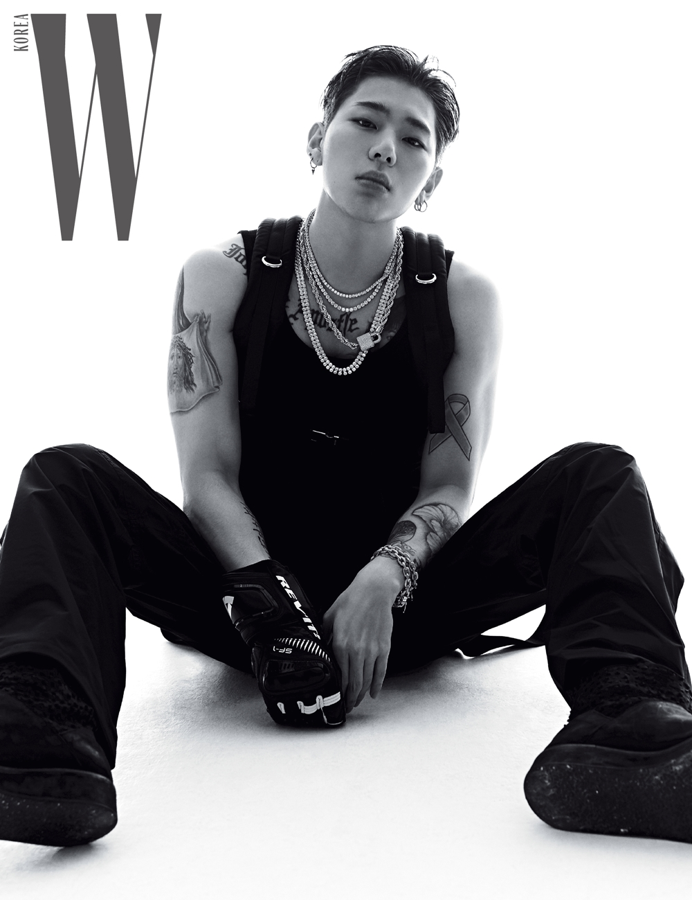
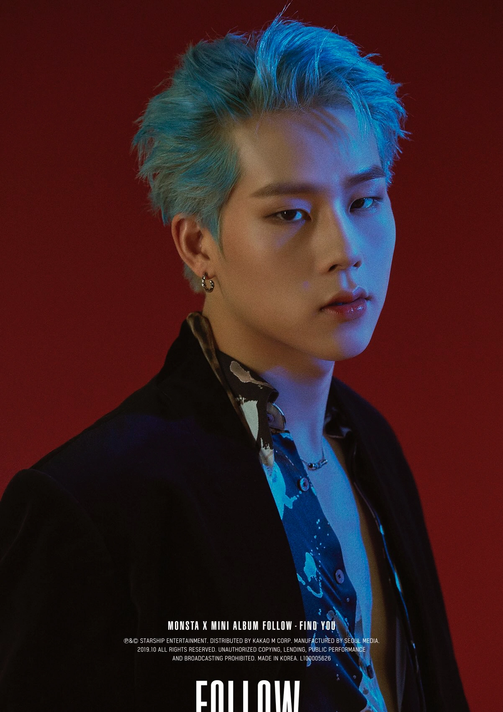

Hyun-ju Ho (Jessi) was born in New York on December 17,1988. She move to South Korea when she was 15 to start her training to become a rapper. She is currently under the new company PNation. She's also first idol to realease the song 'Who Dat B' in PNation .
Zico

Woo Ji-ho (Zico) was born in Mapo, Seoul on September 14, 1992. He started in a boy group call BlockB, but had a hard time as a rookie group because of a scandle. After one year of an haitus, they came back. He release his first debut mini-album 'Welcome to the Block'. Zico did many collaboration with many idols like Dean, Crush, IU and many more.
CL
Lee Chae-rin (CL) was born in Seoul, South Korea on February 26, 1991. CL trained in JYP entertainment before joining YG entertainment. At the age 15 she debute in a girl group called 2NE1 in 2009.CL started her solo career in the United States in 2015 (didn't debute in US). In 2016, 2NE1 officially disbanded and she remained a solo act under YG until her contract expired in November 2019. During her 'solo acts' she was beggening YG himself, that she wanted to bring more music to her fans. But always got shut down. There was a rumor that YG was ingnoring her. She left on Nov 7th, 2019. After, a couple days later she comeback with a album 'In the Name of Love'.
Jooheon

Lee Joohoney (Joo-heon) was bron in Seoul, South Korea on October 6,1994. He was in a project kpop group Nu Boyz, formed by Starship in 2014 with multiple mixtape on Starship YT channel. But he debute in the group Monsta X, which was formed through Mnet's survival show No.Mercy in 2015. In January 2015, Jooheon released a collaboration track, "Coach Me" with San E and Sistar's Hyolyn. After he seen in TV shows and realeased solo work.